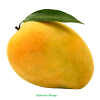

|
|
Tabela Nutricional |
Cadastre-se |
|---|

|
A melhor época para se consumir o morango é entre abril e setembro: ele chega às feiras de frutas com o melhor sabor e perfume! O morango é fonte abundante de vitamina C. |
|  |
Manga fortalece as defesas do corpo, melhora a visão e funcionamento do intestino. Conheça mais benefícios dessa deliciosa fruta. |